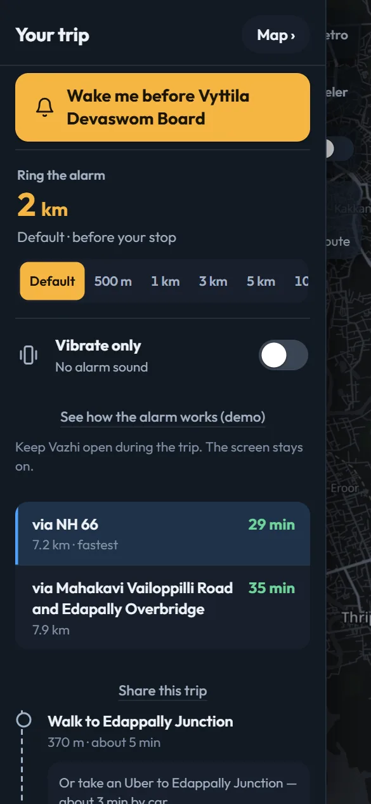

The main thing
An alarm before your stop
Pick when it should ring: 500 m, 1, 2, 3, 5 or 10 km before your stop, or leave it on Auto (2 km or 4 minutes, whichever comes first). A loud alarm, or vibrate only if you don’t want to disturb anyone. A second, gentle alert tells you when you have arrived.
- Rings even when the screen is off or another app is open
- Big “I’m awake” button — no small print
- Try it first with the built-in demo trip
